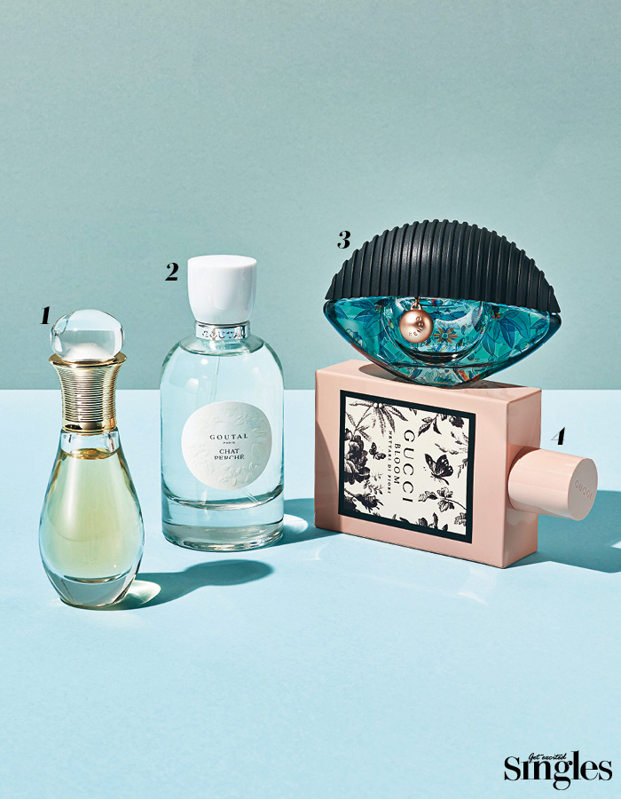

The scent of appeasing me after a business meeting.

If you want to spend a hot evening after work, you might want to add more charm to the sensual
fragrance with ginger and parsley.
If you want to appeal to sophisticated charm, you can choose the fragrance that blends Chan-Am Brock
Mountain and floral.
If you want to show off sexy, you can choose a nostalgic pepper that is a main note but a reverberant
with a
soft floral fragrance.
1. Dior Jador Roller - Pearl Eau De Parfum |
With a delicate pearl applicator, you can roll around your neck or your desired area, such as your wrist.
20ml 59,000 won.
2. Guadalupe Paris Château de Eau de Toilette |
A clean, neat flavor that excludes artificial notes conveys a natural scent. 100ml ₩ 130,000.
3. Kenzo World Eau de Parfum |
It boasts harmonies rich in raspberry and peony notes. 50ml 114,000 won.
4. Gucci Bloom Nettare di Fiori |
Rose and Osmanthus flowers blend ginger and parsley to deliver a sensual fragrance. 100ml 200,000 won.